Case File
Stands alone. No other case needs to be read first. Choose another by its promise.
- Pages — 65
- Genre — Fiction / Fantasy / Epic
- Yield Score — 48 (Marginal)
- Casualties — 313 direct / 354 total
Malik ibn Sabir owns four goats, a threadbare tent his father died in, and nothing else a creditor could claim, and on the night the story opens he splits his last meal with a stranger who asks for nothing. At dawn the stranger presses a single gold dinar into his palm and tells him he will not be able to keep it or to lose it. Spent, it is back in his hand by morning, notch and all. Given away, before both families and the keeper of the well, as part of the mahr for Amina bint Rashid, it passes to her by a witnessed akad and answers to her alone. For a season they are simply happy. Then Amina finds out what the coin will do for exactly as long as she wants it to, and begins, quietly, to price a way to the sea.
She is murdered in her tent by a thief named Zaid, a stranger to her, to her clan and to the quarrel about to be built on the assumption that he was not. Her kinsmen decide that the shepherd with the unexplainable fortune must be the killer. Sulayman ibn Ghanim, her uncle, finds the case thin from the first night and gives the order anyway, because three of his own nephews are already riding. Malik is seized at the edge of the camp and held for two years while the Banu Harith and the Banu Kathir fight a war partly in his name. The war costs some three hundred lives and never once asks him the one question that would have cleared him: where he was the night she died.
The thief spends the coin on wine and rented rooms until his own excess kills him, and in the river-city wine-house where he dies Nur, who has heard his whole confession, takes the coin within the hour. She holds the truth for nearly two years, with no name of her own that anyone would believe, until Qasim al-Fahmi, a scholar who has spent five years following the coin's history, comes asking. He writes her account down that night, and only afterward decides what to do with the coin. The Uncounted Dinar closes on a Cultivator's own archival log: Observer 1140, who is not supposed to have a case he returns to at rest, objects on the record to calling the drop a non-intervention, and a provincial archive clerk files the whole war under the title Grazing Rights Dispute of the Two Confederations.
Principal Subjects

Malik ibn Sabir
Shares his last meal with a stranger, is given a coin he can neither keep nor lose, and spends two years in another clan's custody without anyone asking where he was.

Amina bint Rashid
Learns the coin will answer to her for exactly as long as she wants it to, spends eleven months pricing a way to the sea, and is murdered by a stranger who has never heard her name.
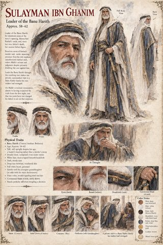
Sulayman ibn Ghanim
Doubts the case against Malik from the first night, gives the order anyway because his own nephews are already riding, and spends two years failing to act on what he suspects.

Nur
Listens to a dying man's whole confession without comment, takes the coin from his body, buys back her own debt, and waits two years for someone who wants the truth badly enough to be honest about why.

Qasim al-Fahmi
Meets a miracle with an inventory, spends five years following one coin through five hands, sends the truth north the night he learns it, and then puts the coin beyond any hand's reach.

The Dinar
Returns to its latest legitimate owner the morning after it is spent, changes hands only by a witnessed word or an owner's death, and is ended by a scholar who breaks it past recognition.
Additional Case Records
41 additional subjects documented
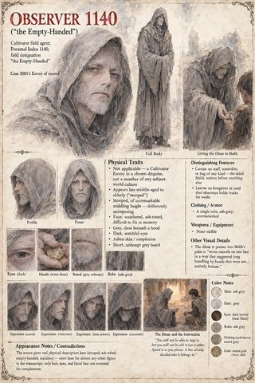
Observer 1140 Hammad
Hammad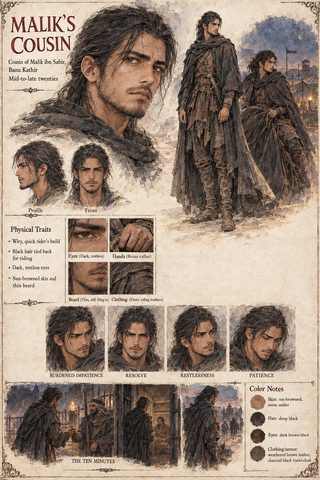
Malik's Cousin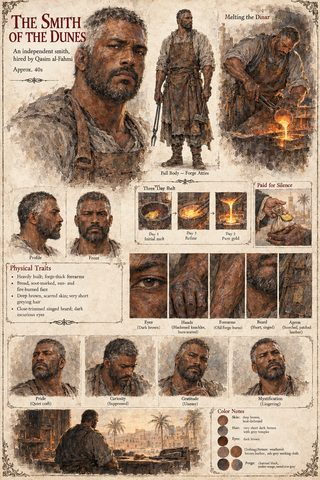
The Smith of the Dunes The Sentry of Banu Kathir
The Sentry of Banu Kathir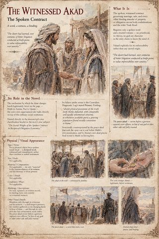
The Witnessed Akad The Provincial Archive Clerk
The Provincial Archive Clerk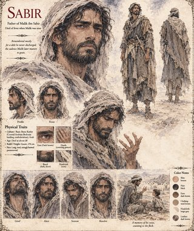
Sabir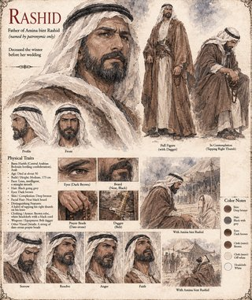
Rashid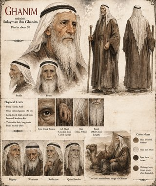
Ghanim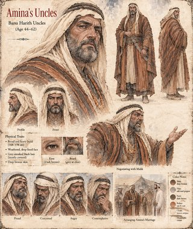
Amina's Uncles The Keeper of the Well
The Keeper of the Well The Caravan's Chief Factor
The Caravan's Chief Factor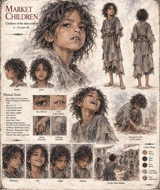
The Market Children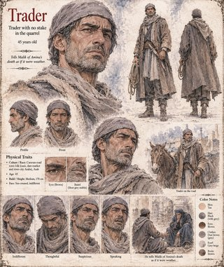
The Trader Who Carried the News The Rumor-Chain Woman
The Rumor-Chain Woman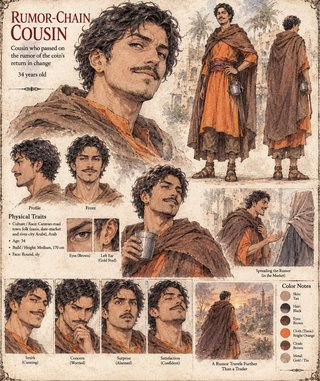
The Rumor-Chain Cousin The Rumor-Chain Trader
The Rumor-Chain Trader The Household Whose Grain Burned
The Household Whose Grain Burned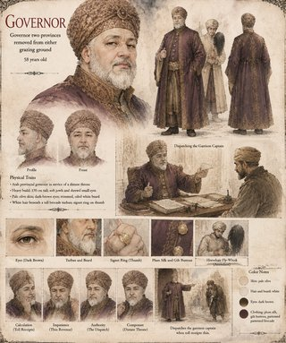
The Provincial Governor The Garrison Captain
The Garrison Captain The Courier
The Courier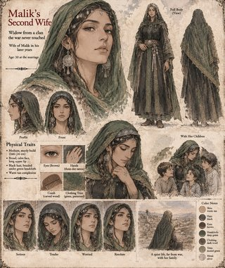
Malik's Second Wife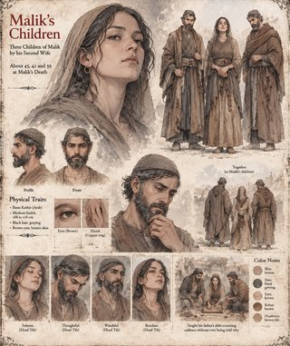
Malik's Children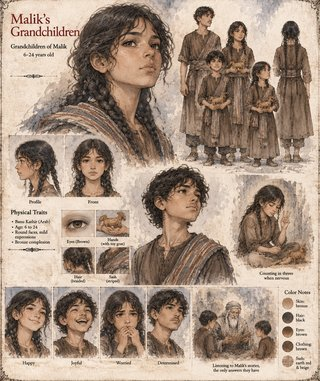
Malik's Grandchildren Malik's Mother
Malik's Mother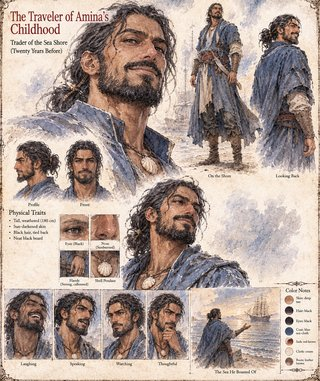
The Traveler of Amina's Childhood The Trader's Assistant
The Trader's Assistant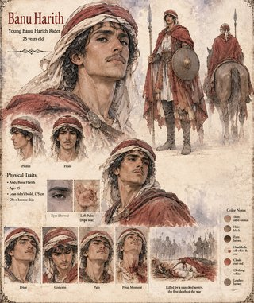
The Banu Harith Rider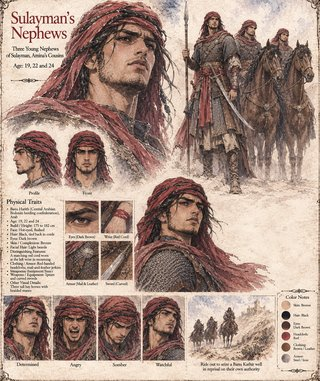
Sulayman's Nephews Salim
Salim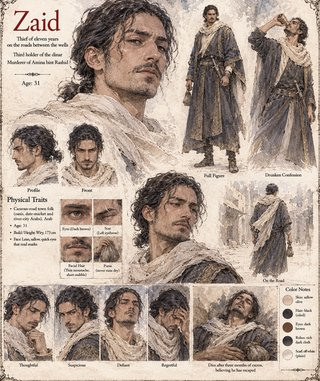
Zaid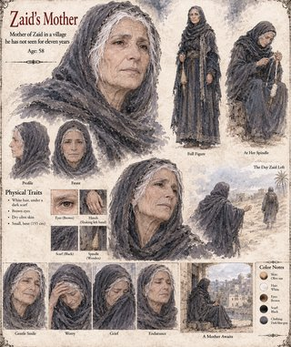
Zaid's Mother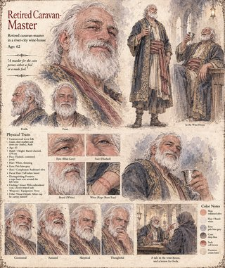
The Retired Caravan-Master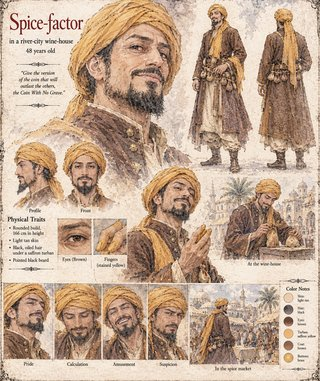
The Spice-Factor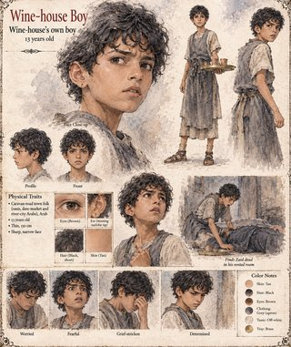
The Wine-House Boy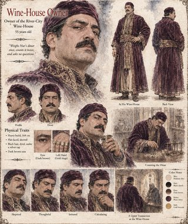
The Wine-House Owner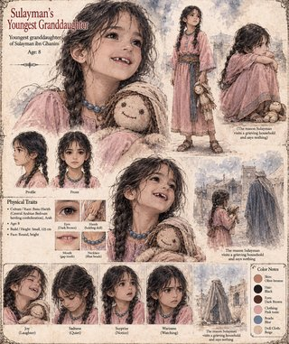
Sulayman's Youngest Granddaughter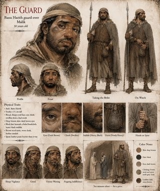
The Banu Harith Guard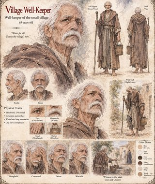
The Village Well-Keeper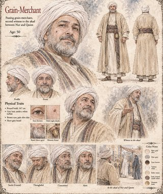
The Passing Grain-Merchant
Records
Record illustrations will be filed here once they are ready.